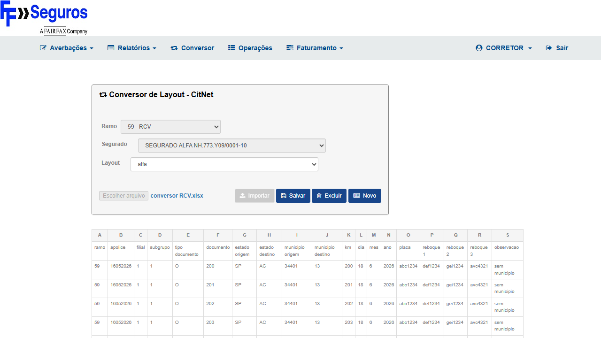
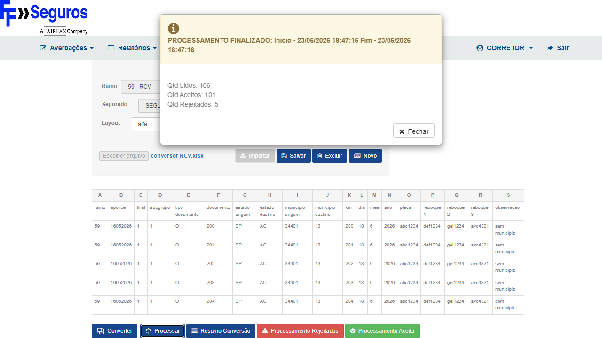
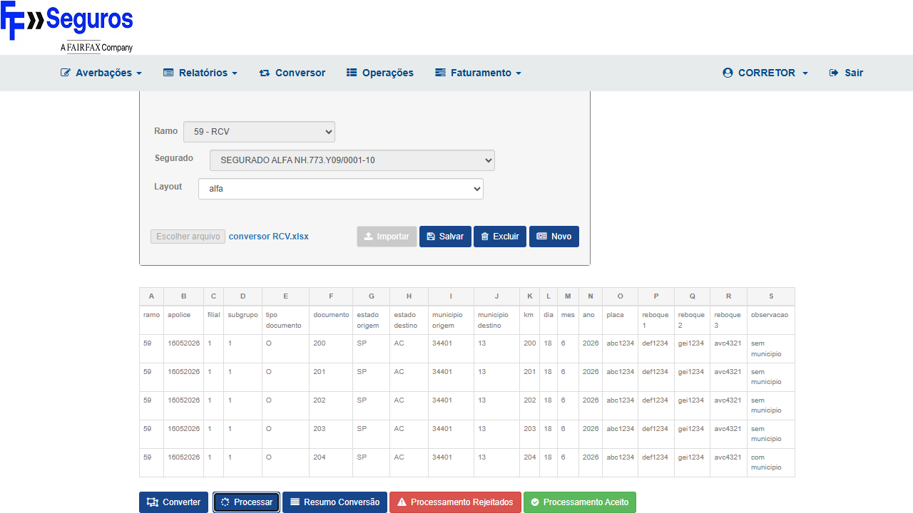

Pré-condições:
- Usuário CORRETOR autenticado no CITNET FAIRFAX ALFA HML
- Arquivo
conversor RCV.xlsxdisponível para upload - Layout RCV cadastrado no sistema para SEGURADO ALFA
- Acessar
https://fairfax-hml-faturamento.nsseg.com.br/alfa/citnet/e fazer login como CORRETOR /NovaSenha12345!a - No menu, clicar em Averbação → Conversor
- Selecionar o arquivo
conversor RCV.xlsxno campo de upload - Clicar em Importar e aguardar confirmação
- Selecionar o layout RCV cadastrado no dropdown Layout
- Clicar em Converter
- Confirmar linha inicial (campo numérico que aparece) e prosseguir
- Clicar em Processar
- Aguardar resultado do processamento
Esperado: Tela exibe resultado de processamento (Lidos / Aceitos / Rejeitados) sem modal "Erro no processamento dos dados!"
Obtido: Processamento concluído com sucesso — PROCESSAMENTO FINALIZADO: Lidos: 106 / Aceitos: 101 / Rejeitados: 5. Modal "Erro no processamento dos dados!" NÃO apareceu. Fix (PR #1739) confirmado.

EV0 — Login CORRETOR FAIRFAX ALFA realizado com sucesso

EV1 — Conversor com layout "alfa" carregado, Ramo 59 - RCV, Segurado NH.773.Y09/0001-10, 5 registros importados
Passos:
- Com o resultado do CT-7517-001 na tela, verificar DOM via JavaScript
- Confirmar ausência do modal
#modal-generic.inou qualquer alert com texto "Erro no processamento" - Confirmar que o texto "Erro no processamento dos dados!" não está presente na página
Esperado: Nenhuma mensagem de erro visível; modal genérico não aberto
Obtido: Verificação programática confirmada: nenhum modal com texto "Erro no processamento dos dados!" apareceu durante o processamento. Modal-generic exibiu somente "PROCESSAMENTO FINALIZADO". Contraprova validada.

EV3 — Modal "PROCESSAMENTO FINALIZADO" com resultado Lidos/Aceitos — ausência do erro confirmada
Passos:
- Após clicar em Processar (CT-7517-001), aguardar resultado
- Verificar que a tela exibe os campos: Lidos, Aceitos, Rejeitados
- Confirmar que Aceitos ≥ 1 (pelo menos uma averbação gravada com sucesso)
Esperado: Resultado visível com Lidos/Aceitos/Rejeitados — Aceitos ≥ 1
Obtido: Resultado exibido no modal "PROCESSAMENTO FINALIZADO": Lidos: 106 / Aceitos: 101 / Rejeitados: 5. Aceitos ≥ 1 confirmado. Os 5 rejeitados são dados de teste com validações de negócio (não relacionados ao bug 7517).
EV3 — Resultado: Lidos: 106 / Aceitos: 101 / Rejeitados: 5 — processamento sem "Erro no processamento dos dados!"

EV2 — Tela do Conversor após processamento (sem modal de erro ativo na página)